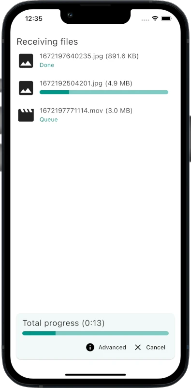
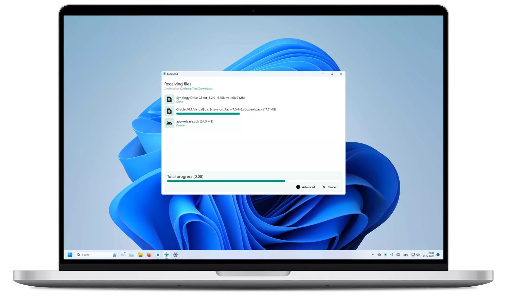
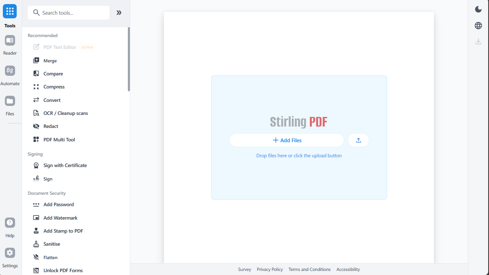

跨设备文件传输
LocalSend
在同一个局域网里，把文件、图片、文本从手机发到电脑，或者从电脑发到平板。不需要登录账号， 也不依赖第三方云盘，适合临时传课件、照片、压缩包和截图。
- 支持 Windows、Android、iOS、macOS、Linux，多设备互传很方便。
- 文件在本地网络内传输，速度和隐私都更容易掌控。
- 没有网盘登录流程，适合课堂、办公室、家庭局域网。


本地文件流转 + PDF 工作台
LocalSend 负责手机、电脑、平板之间快速互传文件；Stirling PDF 负责合并、压缩、转换和编辑 PDF。这个页面既可以当作你的第一个网页作品，也能作为电脑上的实用工具导航。
两个主工具，两类高频任务
跨设备文件传输
在同一个局域网里，把文件、图片、文本从手机发到电脑，或者从电脑发到平板。不需要登录账号， 也不依赖第三方云盘，适合临时传课件、照片、压缩包和截图。


PDF 本地处理平台
在浏览器里处理 PDF：合并、拆分、压缩、转换、签名、打码、OCR。文件可以在本机服务里处理， 适合不想把证件、合同、论文上传到陌生网站的场景。
提示：localhost 地址只在你自己的电脑上有效，别人访问线上网站时需要自行安装或部署 Stirling PDF。

适合谁用
手机拍照、下载课件，再传到电脑合并成 PDF，最后压缩后提交。
把合同、表格、证明材料快速合并、拆分、加水印或转格式。
不登录网盘、不扫复杂二维码，在同一 Wi-Fi 下直接互传文件。
敏感文档优先在本地处理，减少上传到陌生在线工具的风险。
怎么搭配用
用 LocalSend 把图片、PDF、压缩包快速发到电脑。
打开 Stirling PDF，对文件进行合并、压缩、转换格式或加页码。
处理好的文件再通过 LocalSend 发回手机，或者直接上传到系统。
更多实用项目
开源远程桌面工具，适合远程帮别人看电脑、管理自己的设备。
在电脑本地运行大模型，适合学习 AI、写作、代码辅助和离线实验。
给本地大模型配一个类似聊天应用的网页界面，搭配 Ollama 使用很顺手。
用图形界面管理 Git 仓库，适合刚开始做网页项目和上传作品。
下载与项目入口
作品集方向
这个项目已经具备 GitHub Pages 发布、中文介绍、工具分类、下载入口和弹窗详情。后续可以继续加入 Dify、Docker Desktop、VS Code 插件、浏览器扩展等内容，让它逐步变成一个可以展示给别人看的网页作品。
工具详情